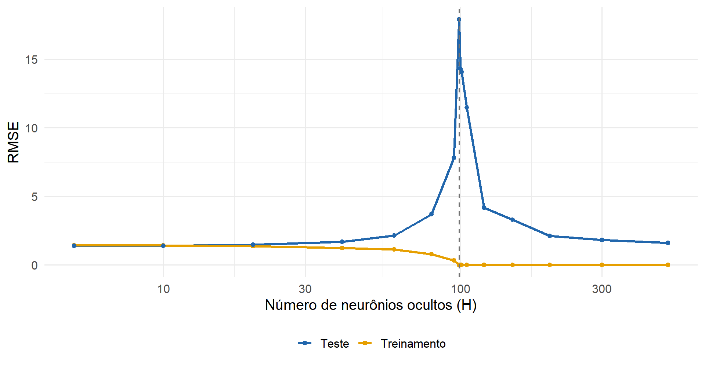
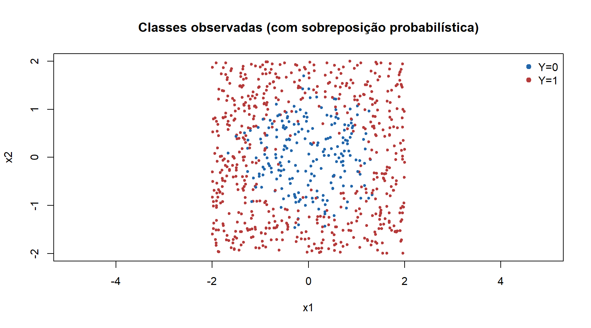
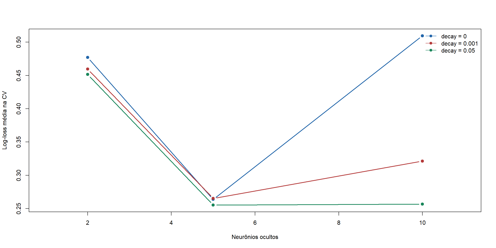

Parte I : Aprendizado Supervisionado
Redes Neurais Artificiais
Redes Neurais Artificiais
Questão motivadora
Como unidades de processamento relativamente simples, quando conectadas, conseguem representar relações complexas entre variáveis?
- Modelos lineares combinam preditores diretamente.
- RNAs compõem transformações lineares e não lineares.
- Os parâmetros são estimados a partir dos dados.
Motivação: da biologia à modelagem

O primeiro modelo: McCulloch–Pitts (1943)

Como funciona uma unidade de limiar?
Considere duas entradas binárias, com \(w_1=w_2=1\) e \(\theta=2\):
\[ y=\mathbb{I}(x_1+x_2\geq 2). \]
| \(x_1\) | \(x_2\) | \(z=x_1+x_2\) | \(y\) |
|---|---|---|---|
| 0 | 0 | 0 | 0 |
| 0 | 1 | 1 | 0 |
| 1 | 0 | 1 | 0 |
| 1 | 1 | 2 | 1 |
Interpretação: esta unidade implementa a operação lógica E (AND).
O que o modelo de McCulloch–Pitts não fazia?
- Não aprendia pesos a partir de exemplos: as conexões eram especificadas previamente.
- Produzia decisões discretas por meio de um limiar.
- Não oferecia, por si só, um procedimento de treinamento supervisionado.
Pergunta: e se pudéssemos estimar os pesos usando observações \((\mathbf{x}_i,y_i)\)?
Perceptron de Rosenblatt (1958)
O perceptron introduz uma regra de atualização para os pesos de uma unidade classificadora:
\[ \widehat y=\mathbb{I}(\mathbf{w}^{\mathsf T}\mathbf{x}+b\geq 0) \]
Para \(y\in\{0,1\}\), uma forma da atualização é:
\[ \mathbf{w}\leftarrow\mathbf{w}+\eta(y-\widehat y)\mathbf{x},\qquad b\leftarrow b+\eta(y-\widehat y) \]
- \(\eta>0\): taxa de aprendizagem.
- A atualização depende do erro de classificação.
- Um único perceptron produz uma fronteira linear.
Por que precisamos de funções de ativação?
Um neurônio moderno calcula:
\[ z=\mathbf{w}^{\mathsf T}\mathbf{x}+b, \qquad a=\phi(z) \]
Exemplos:
\[ \sigma(z)=\frac{1}{1+e^{-z}},\qquad \operatorname{ReLU}(z)=\max(0,z) \]
Diferenças importantes
- Pesos e viés ajustáveis.
- Ativações não lineares.
- Saídas não necessariamente binárias.
- Treinamento via otimização.
De um neurônio a uma rede multicamadas
Uma camada oculta:
\[ \mathbf{h}=\phi(W_1\mathbf{x}+\mathbf{b}_1) \]
\[ \widehat y=\psi(W_2\mathbf{h}+b_2) \]
A composição permite representar relações não lineares.
Atenção: os nós da camada de entrada geralmente representam variáveis, e não neurônios de processamento.
De um neurônio a uma rede multicamadas

Conexão com modelos estatísticos
| Modelo | Expressão típica | O que é estimado? |
|---|---|---|
| Regressão linear | \(\widehat y=\mathbf{w}^{\mathsf T}\mathbf{x}+b\) | Coeficientes |
| Regressão logística | \(\widehat p=\sigma(\mathbf{w}^{\mathsf T}\mathbf{x}+b)\) | Coeficientes |
| RNA com camada oculta | \(\widehat y=\psi(W_2\phi(W_1\mathbf{x}+\mathbf{b}_1)+b_2)\) | Pesos e vieses de todas as camadas |
Próxima pergunta: como estimar todos esses parâmetros minimizando uma função de perda?
\[ \widehat{\boldsymbol\theta}=\arg\min_{\boldsymbol\theta} \frac1n\sum_{i=1}^{n}L(y_i,g_{\boldsymbol\theta}(\mathbf{x}_i)) \]
Pergunta orientadora
Como a composição de transformações simples pode representar relações complexas entre preditores e resposta?
Ideia-chave: estimar uma função \(g_\theta(\mathbf{x})\) flexível, cujos parâmetros \(\theta\) são aprendidos a partir de dados.
O que uma RNA aprende?
Em aprendizagem supervisionada, observamos \((\mathbf{x}_i,y_i)\), \(i=1,\ldots,n\).
\[ \widehat g = \arg\min_{g\in\mathcal G_{RNA}} \frac1n\sum_{i=1}^n L\big(y_i,g(\mathbf{x}_i)\big) \]
- Arquitetura: define a classe de funções \(\mathcal G_{RNA}\).
- Pesos e vieses: determinam uma função específica.
- Função de perda: traduz o objetivo estatístico.
- Otimizador: procura parâmetros com baixa perda.
Revisão: regressão logística
Para classificação binária:
\[ P(Y=1\mid\mathbf{x})=\sigma(\beta_0+\boldsymbol\beta^\top\mathbf{x}),\qquad \sigma(z)=\frac{1}{1+e^{-z}} \]
A combinação dos preditores é linear no logito.
Questão: e se a fronteira de decisão não puder ser descrita por um hiperplano?
Neurônio artificial
\[ \underbrace{z}_{\text{pré-ativação}}=\sum_{j=1}^p w_jx_j+b, \qquad \underbrace{a}_{\text{ativação}}=\phi(z) \]
- \(x_j\): entradas; \(w_j\): pesos; \(b\): viés (bias).
- \(\phi\): função de ativação, geralmente não linear.
- Uma unidade com ativação sigmoide lembra a regressão logística; a composição de camadas amplia a representação.
Funções de ativação
| Função | Definição | Observação |
|---|---|---|
| Identidade | \(\phi(z)=z\) | Saída para regressão |
| Sigmoide | \(\phi(z)=\dfrac{1}{1+e^{-z}}\) | Saída binária probabilística |
| Tanh | \(\phi(z)=\tanh(z)\) | Valores em \((-1,1)\) |
| ReLU | \(\phi(z)=\max(0,z)\) | Frequente em camadas ocultas |
| Leaky ReLU | \(\phi(z)=\max(\alpha z,z)\) | Mantém gradiente para \(z<0\), com \(0<\alpha<1\) |
| Softmax | \(\phi_k(\mathbf{z})=\dfrac{e^{z_k}}{\sum_{j=1}^{K}e^{z_j}}\) | Probabilidades para \(K\) classes |
Observações:
- Leaky ReLU: reduz o problema dos neurônios mortos (dying ReLU).
- Softmax: atua sobre um vetor e produz probabilidades cuja soma é igual a 1.
- Não linearidade: sem funções de ativação não lineares entre as camadas, a composição de transformações afins continua afim.
Visualizando ativações

Rede com uma camada oculta
\[ \mathbf{h}=\phi\left(W^{(1)}\mathbf{x}+\mathbf{b}^{(1)}\right), \qquad \widehat y=\psi\left(W^{(2)}\mathbf{h}+\mathbf{b}^{(2)}\right) \]
- \(W^{(1)}\in\mathbb R^{H\times p}\); \(\mathbf b^{(1)}\in\mathbb R^H\)
- \(W^{(2)}\in\mathbb R^{1\times H}\); \(b^{(2)}\in\mathbb R\)
- \(\psi\) depende da tarefa: identidade ou sigmoide, por exemplo.
Quantos parâmetros?
Para \(p\) entradas, \(H\) neurônios ocultos e uma saída:
\[ \#\theta=\underbrace{pH+H}_{\text{camada oculta}}+ \underbrace{H+1}_{\text{saída}}=H(p+2)+1 \]
Exemplo: \(p=10\) e \(H=20\) implicam 241 parâmetros.
Aumentar \(H\) aumenta a capacidade de representação e também o custo de estimação.
O papel da profundidade
Com \(L\) camadas ocultas:
\[ \mathbf h^{(\ell)}=\phi_\ell\left(W^{(\ell)}\mathbf h^{(\ell-1)}+\mathbf b^{(\ell)}\right), \quad \mathbf h^{(0)}=\mathbf x \]
A rede constrói representações sucessivas dos dados.
Uma rede larga com uma camada oculta pode aproximar uma ampla classe de funções contínuas em conjuntos compactos, sob condições adequadas. Isso não garante aprendizagem, eficiência ou generalização com amostras finitas.
Regressão e classificação: o que muda?
| Elemento | Regressão | Classificação binária |
|---|---|---|
| Saída | \(\hat y\in\mathbb R\) | \(\hat p\in(0,1)\) |
| Ativação final | Identidade | Sigmoide |
| Perda comum | MSE | Log-loss (entropia cruzada) |
| Métricas | RMSE, MAE, \(R^2\) | AUC, acurácia, F1, log-loss |
Importante:
- A mesma função pode ser utilizada como perda de treinamento e métrica de avaliação.
- Na classificação binária, a log-loss equivale à entropia cruzada binária.
- Uma probabilidade estimada não é automaticamente bem calibrada.
Funções de perda
Erro quadrático médio:
\[L_{MSE}(\theta)=\frac1n\sum_{i=1}^n (y_i-\widehat y_i)^2\]
Log-Loss:
\[L_{LL}(\theta)=-\frac1n\sum_{i=1}^n\left[y_i\log\widehat p_i+(1-y_i)\log(1-\widehat p_i)\right]\]
A escolha da perda deve refletir a tarefa e as propriedades desejadas da predição.
Risco empírico e regularização
\[ \widehat\theta=\arg\min_\theta\left\{ \frac1n\sum_{i=1}^n L\big(y_i,f_\theta(\mathbf x_i)\big) +\lambda\Omega(\theta)\right\} \]
Para penalização \(L_2\):
\[\Omega(\theta)=\sum_{w\in\mathcal W}w^2\]
A penalização é usualmente aplicada aos pesos, não necessariamente aos vieses. A convenção de escala de \(\lambda\) varia entre implementações.
Conexão com ridge e splines
- Ridge: penaliza coeficientes de um modelo linear.
- Smoothing spline: penaliza a rugosidade da função estimada.
- RNA com weight decay: penaliza a magnitude dos pesos.
Em todos os casos há um compromisso entre ajuste aos dados e complexidade efetiva.
As penalizações não são equivalentes: atuam em objetos e espaços funcionais diferentes.
Como a rede aprende?
Atualização por gradiente descendente:
\[ \theta^{(t+1)}=\theta^{(t)}-\eta\nabla_\theta L(\theta^{(t)}) \]
- \(\eta\): taxa de aprendizagem (learning rate).
- A superfície de perda de RNAs geralmente é não convexa.

Exemplo: derivada de uma unidade sigmoide
Considere \(\widehat p=\sigma(wx+b)\) e a perda para uma observação:
\[\ell=-y\log\widehat p-(1-y)\log(1-\widehat p)\]
Usando a regra da cadeia:
\[ \frac{\partial\ell}{\partial w}=(\widehat p-y)x, \qquad \frac{\partial\ell}{\partial b}=\widehat p-y \]
Interpretação: o erro de predição é propagado para ajustar os parâmetros.
Backpropagation: ideia central
Para uma camada oculta:
\[ \delta^{(2)}=\frac{\partial\ell}{\partial z^{(2)}},\qquad \delta^{(1)}=\big[(W^{(2)})^\top\delta^{(2)}\big]\odot\phi'(z^{(1)}) \]
\[ \frac{\partial\ell}{\partial W^{(\ell)}}=\delta^{(\ell)}(h^{(\ell-1)})^\top \]
O backpropagation calcula gradientes eficientemente; não é, por si só, o algoritmo de atualização dos pesos.
Passos do treinamento
- Inicializar pesos e vieses.
- Fazer a passagem para frente (forward pass).
- Calcular a função de perda.
- Calcular gradientes por backpropagation.
- Atualizar parâmetros pelo otimizador.
- Repetir até um critério de parada.
Inicializações, taxa de aprendizagem e sementes podem afetar o resultado.

Viés, variância e generalização
Pouca capacidade: risco de subajuste (underfitting).
Muita capacidade sem controle: risco de sobreajuste (overfitting).
Mais parâmetros não implicam necessariamente maior erro de teste.
A generalização depende dos dados, da arquitetura, do treinamento e da regularização.

Descida dupla (double descent): em alguns problemas, o erro de teste diminui, aumenta próximo ao limiar de interpolação e volta a diminuir em regimes superparametrizados.
Descida dupla: mais neurônios significam mais sobreajuste?
Motivação: na abordagem clássica do compromisso viés-variância, esperamos que modelos excessivamente complexos apresentem maior erro de generalização.
Mas será que isso sempre acontece em redes neurais?
Descida dupla: mais neurônios significam mais sobreajuste?
Considere uma rede com uma camada oculta:
\[ \hat g_H(\mathbf{x}) = \beta_0 + \sum_{j=1}^{H} \beta_j \tanh(\mathbf{w}_j^\top\mathbf{x}+b_j) \]
No experimento:
- Largura da rede: variamos o número de neurônios ocultos \(H\).
- Camada oculta: pesos e vieses gerados aleatoriamente e mantidos fixos.
- Camada de saída: coeficientes estimados por mínimos quadrados de norma mínima.
- Avaliação: comparamos o RMSE de treinamento e teste.
Questão central: uma rede com mais parâmetros treináveis do que observações pode apresentar menor erro de teste do que uma rede menor?
Descida dupla: experimento com redes neurais
Variamos o número de neurônios ocultos \(H\) e comparamos o RMSE de treinamento e teste.

Discussão: o erro de teste necessariamente aumenta quando a rede passa a ter mais parâmetros do que observações?
Estratégias de controle e generalização
| Estratégia | Objetivo principal |
|---|---|
| Weight decay (\(L_2\)) | Penalizar a magnitude dos pesos |
| Early stopping | Limitar o treinamento usando validação |
| Dropout | Regularizar por desativação aleatória de ativações |
| Arquitetura | Controlar largura e profundidade |
| Padronização | Melhorar a estabilidade da otimização |
| Validação cruzada | Selecionar hiperparâmetros |
Estratégias de controle e generalização
Conexão com a aprendizagem estatística:
- Weight decay é relacionado à regressão ridge.
- Early stopping atua como regularização implícita.
- A validação cruzada permite comparar diferentes níveis de complexidade e regularização.
Importante: controlar a generalização não significa necessariamente reduzir o número de parâmetros.
Protocolo de avaliação sem vazamento
Treino / validação / teste
- Treino: estimar pesos e parâmetros de pré-processamento.
- Validação ou CV: escolher arquitetura e penalização.
- Teste: estimar desempenho final uma única vez, após a seleção.
Em CV, a padronização precisa ser recalculada dentro de cada partição de treinamento.
Estudo de caso: classificação não linear
Simularemos duas classes cuja fronteira depende da distância à origem:
\[ P(Y=1\mid x_1,x_2)=\sigma\left(2.5(x_1^2+x_2^2-1.3)\right) \]
O objetivo é comparar:
- Regressão logística linear em \(x_1,x_2\).
- Regressão logística com termos quadráticos.
- RNA com uma camada oculta.
Simulação dos dados
Visualização do problema

Modelos de referência
Discussão: uma regressão logística com engenharia de atributos pode representar uma fronteira não linear no espaço original.
RNA no R: pacote nnet
-
size: número de neurônios na camada oculta. -
decay: penalização dos pesos (escala própria donnet). -
entropy=TRUE: entropia cruzada para saída logística binária. -
maxit: limite de iterações do otimizador.
Preparação correta para validação cruzada
Padronização é estimada em cada treino interno:
Validação cruzada: grade de hiperparâmetros
A escolha dos hiperparâmetros será feita apenas com o conjunto de treinamento.
Validação cruzada: execução
resultado <- numeric(nrow(grade))
for (j in seq_len(nrow(grade))) {
perdas <- numeric(K)
for (k in seq_len(K)) {
pp <- padronizar(treino[fold != k, ], treino[fold == k, ])
set.seed(1000 + 100*j + k)
ajuste <- nnet(y ~ x1 + x2, data=pp$treino,
size=grade$size[j], decay=grade$decay[j],
entropy=TRUE, maxit=400, trace=FALSE,
MaxNWts=1000)
p <- predict(ajuste, newdata=pp$valid, type="raw")
perdas[k] <- logloss(pp$valid$y, p)
}
resultado[j] <- mean(perdas)
}
grade$logloss_cv <- resultado
grade <- grade[order(grade$logloss_cv), ]
head(grade, 6) size decay logloss_cv
8 5 0.050 0.2552523
9 10 0.050 0.2566146
2 5 0.000 0.2637235
5 5 0.001 0.2652314
6 10 0.001 0.3212239
7 2 0.050 0.4515107Visualização da seleção
cores <- c("#2266aa", "#b53b3b", "#19865a")
plot(range(grade$size)+c(-1,1), range(grade$logloss_cv), type="n",
xlab="Neurônios ocultos", ylab="Log-loss média na CV")
for (j in seq_along(sort(unique(grade$decay)))) {
d <- sort(unique(grade$decay))[j]
sub <- grade[grade$decay==d, ]
sub <- sub[order(sub$size), ]
lines(sub$size, sub$logloss_cv, type="b", pch=19, col=cores[j], lwd=2)
}
legend("topright", paste("decay =", sort(unique(grade$decay))),
col=cores, lty=1, pch=19, bty="n")Visualização da seleção

Ajuste final e avaliação no teste
melhor <- grade[1, ]
pp <- padronizar(treino, teste)
set.seed(335)
mod_rna <- nnet(y ~ x1 + x2, data=pp$treino,
size=melhor$size, decay=melhor$decay,
entropy=TRUE, maxit=500, trace=FALSE)
p_rna <- as.numeric(predict(mod_rna, pp$valid, type="raw"))
p_lin <- predict(mod_linear, teste, type="response")
p_quad <- predict(mod_quad, teste, type="response")
comparacao <- data.frame(
Modelo=c("Logística linear", "Logística quadrática", "RNA"),
LogLoss=c(logloss(teste$y,p_lin), logloss(teste$y,p_quad),
logloss(teste$y,p_rna)),
Acuracia=c(mean((p_lin>=.5)==teste$y),
mean((p_quad>=.5)==teste$y),
mean((p_rna>=.5)==teste$y)))
comparacao Modelo LogLoss Acuracia
1 Logística linear 0.5999623 0.715
2 Logística quadrática 0.2365543 0.895
3 RNA 0.2508191 0.895Como interpretar a comparação?
- A log-loss avalia a qualidade das probabilidades previstas.
- A acurácia depende do limiar de classificação escolhido.
- O modelo quadrático possui estrutura correta para este gerador de dados.
- A RNA aprende uma fronteira flexível sem fornecer explicitamente \(x_1^2\) e \(x_2^2\).
Não se espera que a RNA sempre supere um modelo estatístico bem especificado.
Fronteiras de decisão estimadas
grid <- expand.grid(x1=seq(-2,2,length.out=100),
x2=seq(-2,2,length.out=100))
p1 <- predict(mod_linear, grid, type="response")
p2 <- predict(mod_quad, grid, type="response")
p3 <- as.numeric(predict(mod_rna, padronizar(treino,grid)$valid,
type="raw"))
par(mfrow=c(1,3), mar=c(3,3,3,1))
for (i in 1:3) {
ppred <- list(p1,p2,p3)[[i]]
image(sort(unique(grid$x1)), sort(unique(grid$x2)),
matrix(ppred,100,100), col=hcl.colors(25,"Blues"),
xlab="x1", ylab="x2", main=c("Logística linear", "Quadrática", "RNA")[i],
zlim=c(0,1))
contour(sort(unique(grid$x1)), sort(unique(grid$x2)),
matrix(ppred,100,100), levels=.5, add=TRUE, drawlabels=FALSE,
lwd=2, col="#b53b3b")
}Fronteiras de decisão estimadas
Discussão: fronteiras de decisão
- A logística linear produz uma fronteira reta.
- A logística quadrática pode produzir uma fronteira curva.
- A RNA constrói uma aproximação não linear a partir de unidades ocultas.
Pergunta: a maior flexibilidade da RNA representa uma vantagem em qualquer cenário?
Não! A flexibilidade é vantajosa quando a estrutura da relação entre as variáveis é suficientemente complexa para justificar um modelo mais expressivo.
Interpretação estatística
A RNA define uma função \(g_\theta\), mas seus pesos individuais não possuem, em geral, interpretação marginal direta como os coeficientes de uma regressão linear.
Possíveis ferramentas: curvas de dependência parcial, efeitos locais, análise de sensibilidade e explicações globais e locais. Sempre considerando dependência entre variáveis e limites de causalidade.
EST335 — Semana 9